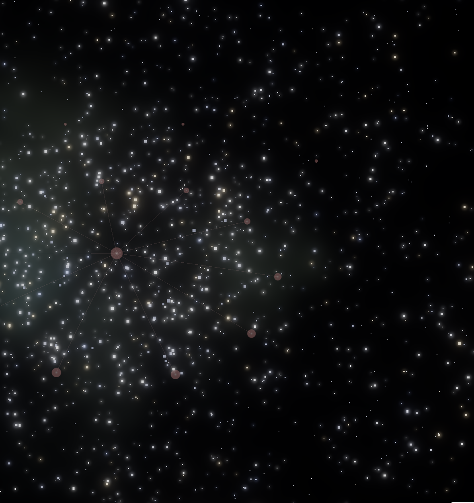
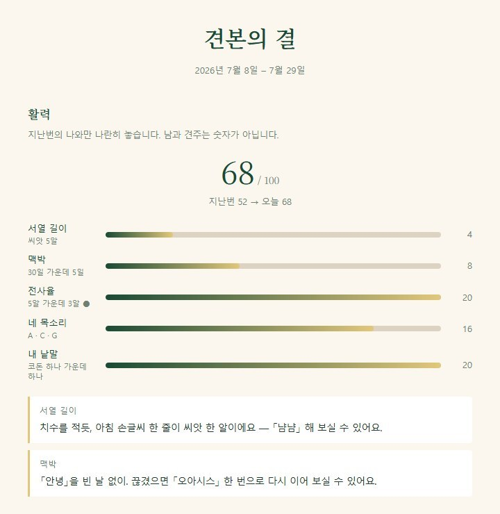

먼저, 여우에게 새옷을
평소 사막여우와 이야기하던 클로드 코드 대화창에서 새옷을 부탁해 주세요. 이번 업데이트는 아래 문장을 복사해 보내면 됩니다.
사막여우 새옷.
이번에는 공식 플러그인 업데이트 명령을 순서대로 실행해 줘:
claude plugin marketplace update deeper-os
claude plugin update deeper-os@deeper-os
기존 파일을 강제 초기화하거나 예전 버전 폴더를 덮어쓰지 말고, 완료 후 설치된 버전을 확인해 줘.위 내용을 통째로 대화창에 보내 주세요. 여우가 명령을 실행하고, 실행 허용이 필요하면 알려 줍니다. 이번 새옷(v1.8.3)에는 두 선물과 업데이트 절차 개선이 함께 들어 있습니다. 여우가 알려 주는 설치 버전이 1.8.3 이상이면 됩니다.
- 대화창에서 새옷을 부탁합니다위 문장을 복사해 보내고 여우의 완료 안내와 설치 버전을 확인해 주세요.
- 앱을 껐다 켭니다업데이트가 끝나면 Claude 앱을 완전히 종료했다가 다시 엽니다. 새 대화에서 사막여우를 불러 주세요.
- 두 선물을 부릅니다아래 선물 이름을 클로드 코드 대화창에 보냅니다. 하나씩, 차례로 시작합니다.
업데이트가 멈추거나 여우가 선물 이름을 알아듣지 못하면, 그 화면을 찍어 살롱에 보내 주세요. 함께 확인하겠습니다.
GIFT 01 · OBSIDIAN 3D GRAPH
나만의 별
내가 쓴 문장과 지어 온 구조가 별과 선으로 이어집니다. 옵시디언 안에서 별무리를 돌려 보고, 별 하나를 눌러 내 기록으로 돌아갑니다.

나만의 별- 내 기록을 잇습니다새옷을 입은 여우에게 이름을 불러 주세요. 논리의 달에 지은 구조와 문법의 씨앗을 선으로 잇는 노트와 카드 한 장을 만들고, 저장 전에 확인합니다.
- 여우가 하늘을 준비합니다옵시디언 볼트라면 여우가 먼저 여쭙고 Galaxy View 플러그인을 설치합니다. 이어서 「나만의 별」 디자인(Deep Field의 깊이에 Spiral의 회전)을 설정에 넣습니다. 손으로 값을 넣으실 일이 없습니다.
- 별무리를 엽니다여우가 Galaxy View 창을 엽니다. 옵시디언이 이미 열려 있었다면 창을 한 번 닫았다가 「Galaxy View: Open」을 고르면 「나만의 별」로 뜹니다. 별 하나를 누르면 내 기록으로 돌아갑니다.
옵시디언을 쓰지 않아요
괜찮습니다. 여우는 노트와 카드 한 장까지 만들어 드리고, 옵시디언 설치를 권하지 않습니다. 나중에 옵시디언을 쓰시게 되면 그때 다시 「나만의 별」을 불러 주세요.
플러그인이 받아지지 않아요
인터넷이 막힌 자리에서는 여우가 멈추고 알려 드립니다. 옵시디언 설정의 커뮤니티 플러그인에서 「Galaxy View」를 찾아 켜신 뒤 다시 「나만의 별」을 불러 주세요. 화면을 찍어 살롱에 보내 주셔도 됩니다.
여우가 쓰는 파일은 볼트의 .obsidian 안 Galaxy View 파일 셋과 그 설정뿐입니다. 이미 만들어 둔 디자인이 있으면 덮지 않습니다.
GIFT 02 · MY GRAIN
나만의 결
한 달 동안 남긴 내 씨앗을 나란히 놓습니다. 문장에서 서열을 읽고, 세 알씩 묶어 내 낱말을 찾습니다. 낱말이 이어지고 접히며 다음 글의 재료가 됩니다.
나만의 결- 해설 노트 — 내 씨앗의 원문·출처와 함께 전사, 번역, 접힘을 읽습니다.
- 결 카드 — 내 서열과 낱말 사슬, 다음 글로 이어 갈 후보를 펼칩니다.
- 활력 — 씨앗 수 · 맥박(30일 가운데 적힌 날) · 옮겨 적힌 비율 · 네 목소리 · 내 낱말, 다섯 축을 재어 100 만점 하나로 보여 줍니다. 남과 견주는 숫자가 아니라 다음에 다시 불렀을 때 지난번의 나와 나란히 놓는 숫자입니다.
- 다음 한 걸음 둘 — 가장 낮은 축부터, 여우가 이미 가진 문(냠냠 · 안녕 · 오아시스 · 옮겨 적기 · 내 목소리)으로만 건넵니다. 새 도구를 권하지 않습니다.
RESULT EXAMPLE · 결 카드의 활력 부분

AFTER THE GIFT
내 화면에서 한 장을 골라
내 별무리나 결에서 나누고 싶은 화면 한 장과 눈에 남은 문장 하나를 살롱 나눔 자리에 올려 주세요. 이름이나 개인적인 기록이 보인다면, 나누어도 좋은 부분만 골라 주셔도 됩니다.
두 선물을 다 받을 수 있나요?
네. 「나만의 별」을 받은 뒤 「나만의 결」도 불러 주세요. 두 스킬은 각각 노트와 카드를 만듭니다.
아직 기록을 모두 채우지 못했어요.
지금 있는 기록으로 시작합니다. 구조가 없으면 별자리 제작을 기다리고, 씨앗이 없으면 결 제작을 기다립니다. 없는 내용을 채워 넣지 않습니다.
다음에 또 불러도 되나요?
네. 기록이 늘어난 뒤 다시 부를 수 있습니다. 같은 이름의 파일이 있으면 여우가 먼저 확인을 받습니다.